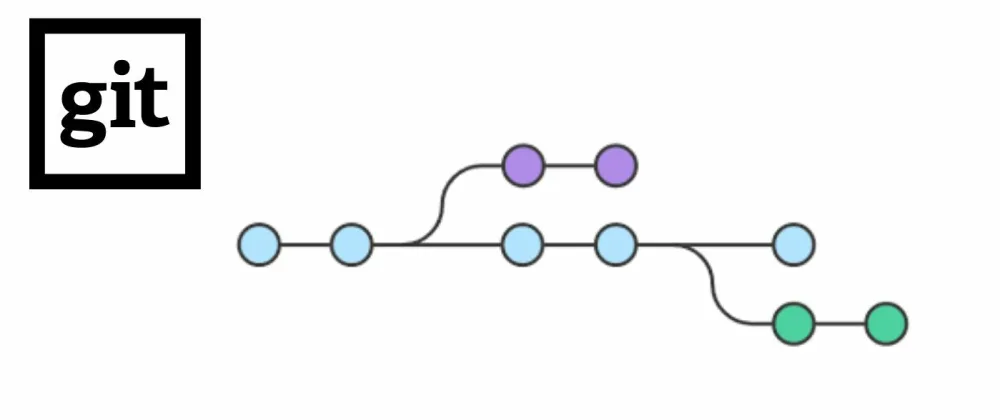
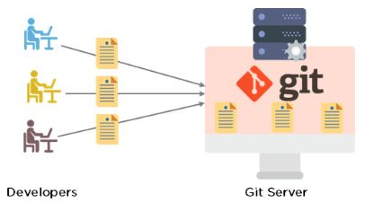
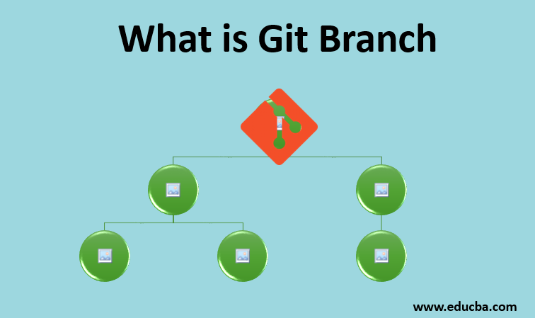

A distributed version control system for tracking changes in source
code.

What is Git?
Git is a distributed version control system that enables developers to
track changes in their code, collaborate with others, and manage
project history efficiently. It allows for branching, merging, and
version control, making it an essential tool for software development
and code management. Git is widely used in open-source and
collaborative software projects, providing a structured way to work on
and maintain code bases.

Why do developers need Git?
Git allows users to 'stage' and 'commit' files, enabling them to
choose specific pieces for version tracking and updates. Online hosts
such as GitHub and Bitbucket can be used for storing a copy of the Git
repository, enabling smoother collaboration with other developers..

What is a branch in Git?
A branch represents an independent line of development. Branches serve
as an abstraction for the edit/stage/commit process. You can think of
them as a way to request a brand new working directory, staging area,
and project history.